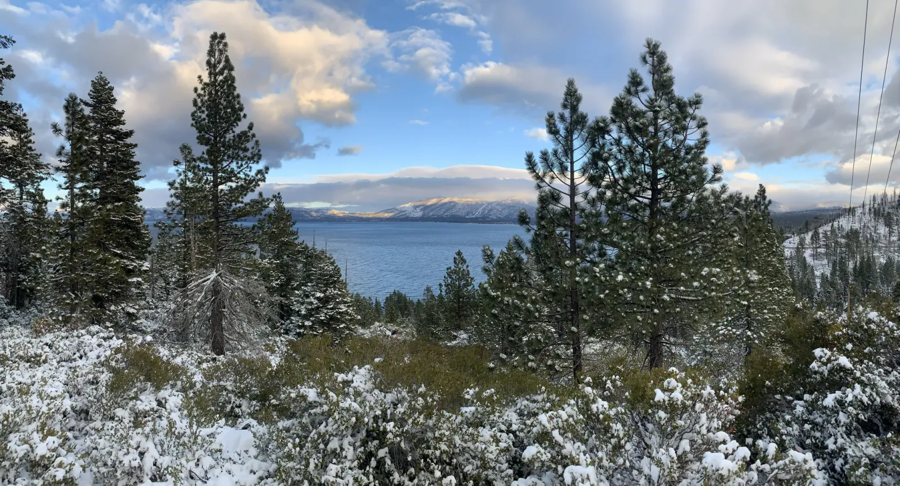

Cold Clarity
Frost had turned every shrub on Heavenly's ridge into white coral. Rime, to be exact: the ice that builds up when fog freezes onto whatever it touches. I had five days at Lake Tahoe as January turned to February, and that Monday morning on the Nevada side the sky was a saturated, cloudless blue. Round granite boulders poked through the wind-packed snow. Far below, the lake lay deep and inky, with a thin bank of fog along the far shore and the snowy crest of the Sierra rising behind it. Tahoe is about 22 miles long, 12 wide and 1,645 feet deep, the second-deepest lake in the country. From the ridge, that depth is easy to believe.
The next afternoon I found snow on the sand at Nevada Beach, with a long black dock stretched across cobalt water and jagged white peaks beyond. Later I paused on Heavenly's lower slopes to look down through the pines at a curving shoreline and its turquoise shallows. By Thursday the blue was gone. After an afternoon near Northstar, the road south along the east shore ran right beside glassy water, and as the light faded a thin stripe of orange slid in beneath the heavy clouds. Lone pines stood black on the granite points, and round boulders sat in the shallows beside their own reflections. I took these from the car, so the pines smeared into brushstrokes and the shoreline into watercolor. Technically, they're a mess. I love them anyway.


I had seen the lake frosted once before. On leap day 2020 I hiked a stretch of what I think was the Rubicon Trail on the west shore in the late afternoon, between granite boulders and tall pines, with the water only a pale strip under heavy gray cloud. That was about two weeks before the pandemic shut everything down. The next afternoon a fresh dusting had coated every shrub and pine bough, the lake was steel blue and the low sun lit the clouds gold. At a roadside pullout near Emerald Bay, the Jeep made a red exclamation point against all that white. Driving Highway 89 along the west shore, expect to pull over a lot. The lake is some two million years old, and the granite around it is older still. Two frosts, almost three years apart, make a small sample. I'd still like a third.